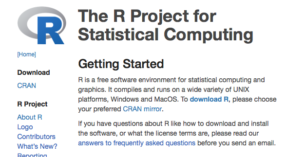
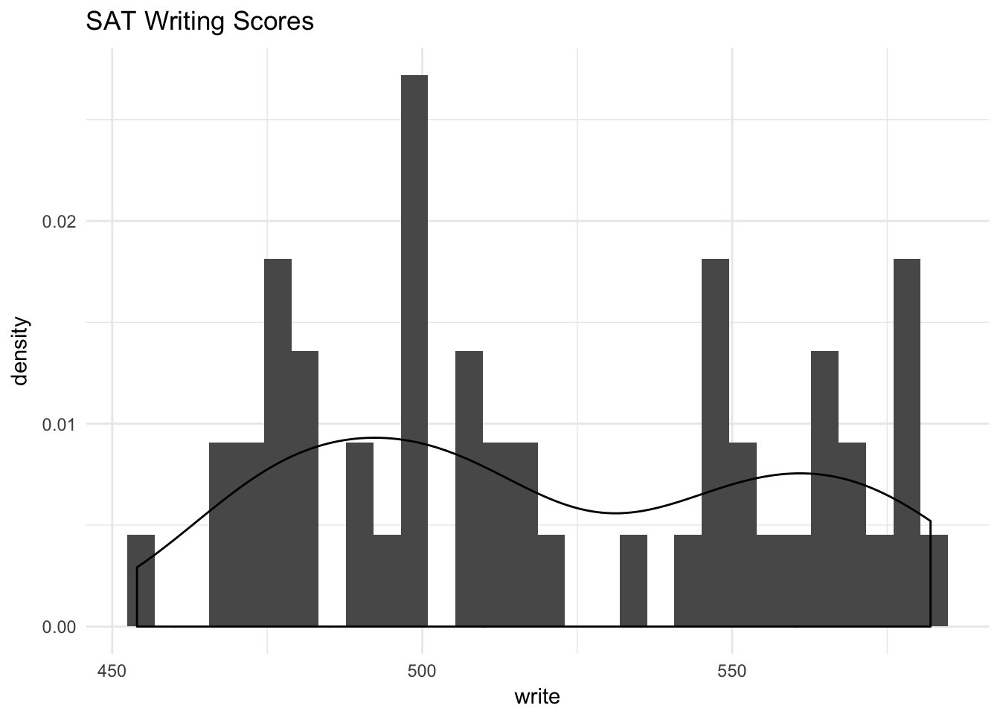

Using R Markdown for Class Assignments
December 2017
Overview
R Markdown is a low-overhead way of writing reports which includes R code and the code’s automatically-generated output. It also lets you include nicely-typeset math, hyperlinks, images, and some basic formatting. The goal of this document is to explain, with examples, how to use its most essential features. It is not a comprehensive reference. (See rather http://rmarkdown.rstudio.com.)
This guide assumes that you know at least some R.
This guide was adapted from http://www.stat.cmu.edu/~cshalizi/rmarkdown.
What is Markdown?
Markdown is a low-overhead mark-up language invented by John Gruber. There are now many programs for translating documents written in Markdown into documents in HTML, PDF or even Word format (among others). R Markdown is an extension of Markdown to incorporate running code, in R, and including its output in the document. This document look in turn at three aspects of R Markdown: how to include basic formatting; how to include R code and its output; and how to include mathematics.
Rendering and Editing
To write R Markdown you can use any text editor, a program which lets you read and write plain text files. You will also need R, and the package rmarkdown (and all the packages it depends on). I highly recommend using R Studio which comes with a built-in text editor, and has lots of tools for, working with R Markdown documents.
Rendering in R Studio
Assuming you have the document you’re working on open in the text editor, click the button that says “knit”.
Rendering in R without using R Studio
See the render command in the package rmarkdown.
Basic Formatting in R Markdown
For the most part, text is just text. One advantage of R Markdown is that the vast majority of your document will be stuff you just type as you ordinarily would.
Paragraph Breaks and Forced Line Breaks
To insert a break between paragraphs, include a single completely blank line.
To force a line break, put two blank
spaces at the end of a line.
To insert a break between paragraphs, include a single completely blank line.
To force a line break, put _two_ blank
spaces at the end of a line.Headers
The character # at the beginning of a line means that the rest of the line is interpreted as a section header. The number of #s at the beginning of the line indicates whether it is treated as a section, sub-section, sub-sub-section, etc. of the document. For instance, Basic Formatting in R Markdown above is preceded by a single #, but Headers at the start of this paragraph was preceded by ###. Do not interrupt these headers by line-breaks.
Italics, Boldface
Text to be italicized goes inside a single set of underscores or asterisks. Text to be boldfaced goes inside a double set of underscores or asterisks.
Text to be _italicized_ goes inside _a single set of underscores_ or *asterisks*. Text to be **boldfaced** goes inside a __double set of underscores__ or **asterisks**.Quotations
Set-off quoted paragraphs are indicated by an initial >:
In fact, all epistemological value of the theory of probability is based on this: that large-scale random phenomena in their collective action create strict, nonrandom regularity. [Gnedenko and Kolmogorov, Limit Distributions for Sums of Independent Random Variables, p. 1]
> In fact, all epistemological value of the theory of probability is based on this: that large-scale random phenomena in their collective action create strict, nonrandom regularity. [Gnedenko and Kolmogorov, _Limit Distributions for Sums of Independent Random Variables_, p. 1]Computer Type
Text to be printed in a fixed-width font, without further interpretation, goes in paired left-single-quotes, a.k.a. “back-ticks”, without line breaks in your typing. (Thus R vs. R.) If you want to display multiple lines like this, start them with three back ticks in a row on a line by themselves, and end them the same way:
Text to be printed in a fixed-width font, without further interpretation,
goes in paired left-single-quotes, a.k.a. "back-ticks", without line breaks
in your typing. (Thus `R` vs. R.)Bullet Lists
- This is a list marked where items are marked with bullet points.
- Each item in the list should start with a
*(asterisk) character, or a single dash (-). - Each item should also be on a new line.
- Indent lines and begin them with
+for sub-bullets. - Sub-sub-bullet aren’t really a thing in R Markdown.
- Indent lines and begin them with
Numbered lists
- Lines which begin with a numeral (0–9), followed by a period, will usually be interpreted as items in a numbered list.
- R Markdown handles the numbering in what it renders automatically.
- This can be handy when you lose count or don’t update the numbers yourself when editing. (Look carefully at the .Rmd file for this item.)
- Sub-lists of numbered lists, with letters for sub-items, are a thing.
- They are however a fragile thing, which you’d better not push too hard.
Hyperlinks and Images
Hyperlinks
Hyperlinks anchored by URLs are easy: just type the URL, as, e.g., to get the source file for this document.
Hyperlinks anchored to text have the anchor in square brackets, then the link in parentheses.
[anchor in square brackets, then the link
in parentheses]()Images
Images begin with an exclamation mark, then the text to use if the image can’t be displayed, then either the file address of the image (in the same directory as your document) or a URL. Here are two examples, one for an image in the directory and one for a URL.

 
There doesn’t seem to be a way of re-sizing images using these Markdown commands. Since you are using R Markdown, however, you can use the following hack:
```{r, fig.retina=NULL, out.width=100, echo=FALSE}
knitr::include_graphics("https://upload.wikimedia.org/wikipedia/commons/b/ba/Sagrada_Familia_nave_roof_detail.jpg")
```
This calls an R command included in the knitr package, with some options about how the R is run (described below).
Including Code
The real point of R Markdown is that it lets you include your code, have the code run automatically when your document is rendered, and seemlessly include the results of that code in your document. The code comes in two varieties, code chunks and inline code.
Code Chunks and Their Results
A code chunk is simply an off-set piece of code by itself. It is preceded by ```{r} on a line by itself, and ended by a line which just says ```. The code itself goes in between. Here, for instance, is some code which loads a data set from a library, and makes a scatter plot.
```{r}
library(tidyverse)
library(mdsr)
SAT_2010 %>% ggplot(aes(write,..density..)) + geom_histogram() + geom_density() + theme_minimal() + labs(title = "SAT Writing Scores")
```library(tidyverse)
library(mdsr)
SAT_2010 %>% ggplot(aes(write,..density..)) + geom_histogram() + geom_density() + theme_minimal() + labs(title = "SAT Writing Scores")
First, notice how the code is included, nicely formatted, in the document. Second, notice how the output of the code is also automatically included in the document. If your code outputs numbers or text, those can be included too:
knitr::kable(head(SAT_2010))| state | expenditure | pupil_teacher_ratio | salary | read | math | write | total | sat_pct |
|---|---|---|---|---|---|---|---|---|
| Alabama | 10 | 15.3 | 49948 | 556 | 550 | 544 | 1650 | 8 |
| Alaska | 17 | 16.2 | 62654 | 518 | 515 | 491 | 1524 | 52 |
| Arizona | 9 | 21.4 | 49298 | 519 | 525 | 500 | 1544 | 28 |
| Arkansas | 10 | 14.1 | 49033 | 566 | 566 | 552 | 1684 | 5 |
| California | 10 | 24.1 | 71611 | 501 | 516 | 500 | 1517 | 53 |
| Colorado | 10 | 17.4 | 51660 | 568 | 572 | 555 | 1695 | 19 |
Inline Code
Code output can also be seamlessly incorporated into the text, using inline code. This is code not set off on a line by itself, but beginning with `r and ending with `. Using inline code is how this document knows that the SAT_2010 data set contains 50 rows (contains 50 rows), and that the median SAT writing score was 511.5 (511.5).
Notice that inline code does not display the commands run, just their output.
Seen But Not Heard
Code chunks (but not inline code) can take a lot of options which modify how they are run, and how they appear in the document. These options go after the initial r and before the closing } that announces the start of a code chunk. One of the most common options turns off printing out the code, but leaves the results alone: ```{r, echo=FALSE}
Another runs the code, but includes neither the text of the code nor its output. ```{r, include=FALSE} This might seem pointless, but it can be useful for code chunks which do set-up like loading data files, or initial model estimates, etc.
Another option prints the code in the document, but does not run it: ```{r, eval=FALSE} This is useful if you want to talk about the (nicely formatted) code.
Tables
The default print-out of matrices, tables, etc. from R Markdown is frankly ugly. The knitr package contains a very basic command, kable, which will format an array or data frame more nicely for display.
Compare:
coefficients(summary(lm(write ~ salary, data = SAT_2010)))## Estimate Std. Error t value Pr(>|t|)
## (Intercept) 600.018506474 3.780370e+01 15.871950 9.930929e-21
## salary -0.001445845 6.841402e-04 -2.113376 3.979291e-02with
library(knitr) # Only need this the first time!
kable(coefficients(summary(lm(write ~ salary, data = SAT_2010))))| Estimate | Std. Error | t value | Pr(>|t|) | |
|---|---|---|---|---|
| (Intercept) | 600.0185065 | 37.8037036 | 15.871950 | 0.0000000 |
| salary | -0.0014458 | 0.0006841 | -2.113376 | 0.0397929 |
— Of course, R’s defaults print out a crazy number of decimal places, but this isn’t the time to discuss significant digits, or the signif function.
“Caching” Code Chunks (Re-Running Only When Changed)
By default, R Markdown will re-run all of your code every time you render your document. If some of your code is slow, this can add up to a lot of time. You can, however, ask R Markdown to keep track of whether a chunk of code has changed, and only re-run it if it has. This is called caching the chunk.
lm(write ~ salary, data = SAT_2010)##
## Call:
## lm(formula = write ~ salary, data = SAT_2010)
##
## Coefficients:
## (Intercept) salary
## 600.018506 -0.001446One issue is that a chunk of code which hasn’t changed itself might call on results of earlier, modified chunks, and then we would want to re-run the downstream chunks. There are options for manually telling R Markdown “this chunk depends on this earlier chunk”, but it’s generally easier to let it take care of that, by setting the autodep=TRUE option.
- If you load a package with the
library()orrequire()commands, R Markdown isn’t smart enough to check whether the package has changed (or indeed been installed, if you were missing it). So that won’t trigger an automatic re-running of a cached code chunk. - To manually force re-running all code chunks, the easiest thing to do is to delete the directory R Markdown will create (named something like filename
_cache) which it uses to store the state of all code chunks.
Setting Defaults for All Chunks
You can tell R to set some defaults to apply to all chunks where you don’t specifically over-ride them. Here are the ones I generally use:
# Need the knitr package to set chunk options
library(knitr)
# Set knitr options for knitting code into the report:
# - Don't print out code (echo)
# - Save results so that code blocks aren't re-run unless code changes (cache),
# _or_ a relevant earlier code block changed (autodep), but don't re-run if the
# only thing that changed was the comments (cache.comments)
# - Don't clutter R output with messages or warnings (message, warning)
# This _will_ leave error messages showing up in the knitted report
opts_chunk$set(echo=FALSE,
cache=TRUE, autodep=TRUE, cache.comments=FALSE,
message=FALSE, warning=FALSE)This sets some additional options beyond the ones I’ve discussed, like not re-running a chunk if only the comments have changed (cache.comments = FALSE), and leaving out messages and warnings. (I’d only recommend suppressing warnings once you’re sure your code is in good shape.) I would typically give this set-up chunk itself the option include=FALSE.
You can over-ride these defaults by setting options for individual chunks.
More Options
See [http://yihui.name/knitr/options/] for a complete listing of possible chunk options.
Math in R Markdown
Since this is a statistics class, you need to be able to write out mathematical expressions, often long series of them. R Markdown gives you the syntax to render complex mathematical formulas and derivations, and have them displayed very nicely. Like code, the math can either be inline or set off (displays).
Inline math is marked off witha pair of dollar signs ($), as \(\pi r^2\) or \(e^{i\pi}\).
Inline math is marked off witha pair of dollar
signs (`$`), as $\pi r^2$ or $e^{i\pi}$.Mathematical displays are marked off with \[ and \], as in \[
e^{i \pi} = -1
\]
Mathematical displays are marked off with `\[` and `\]`, as in
\[
e^{i \pi} = -1
\]Once your text has entered math mode, R Markdown turns over the job of converting your text into math to a different program, called LaTeX1. This is the most common system for typesetting mathematical documents throughout the sciences, and has been for decades. It is extremely powerful, stable, available on basically every computer, and completely free. It is also, in its full power, pretty complicated. Fortunately, the most useful bits, for our purposes, are actually rather straightforward.
Elements of Math Mode
- Most letters will be rendered in italics (compare: a vs.
avs. \(a\); only the last is in math mode). The spacing between letters also follows the conventions for math, so don’t treat it as just another way of getting italics. (Compare speed, in simple italics, with \(speed\), in math mode.) - Greek letters can be accessed with the slash in front of their names, as
\alphafor \(\alpha\). Making the first letter upper case gives the upper-case letter, as in\Gammafor \(\Gamma\) vs.\gammafor \(\gamma\). (Upper-case alpha and beta are the same as Roman A and B, so no special commands for them.) - There are other “slashed” (or “escaped”) commands for other mathematical symbols:
\timesfor \(\times\)\cdotfor \(\cdot\)\leqand\geqfor \(\leq\) and \(\geq\)\subsetand\subseteqfor \(\subset\) and \(\subseteq\)\leftarrow,\rightarrow,\Leftarrow,\Rightarrowfor \(\leftarrow\), \(\rightarrow\), \(\Leftarrow\), \(\Rightarrow\)\approx,\sim,\equivfor \(\approx\), \(\sim\), \(\equiv\)- See, e.g., http://web.ift.uib.no/Teori/KURS/WRK/TeX/symALL.html for a fuller listing of available symbols. (http://tug.ctan.org/info/symbols/comprehensive/symbols-a4.pdf lists all symbols available in
LaTeX, including many non-mathematical special chracters)
- Subscripts go after an underscore character,
_, and superscripts go after a caret,^, as\beta_1for \(\beta_1\) ora^2for \(a^2\). - Curly braces are used to create groupings that should be kept together, e.g.,
a_{ij}for \(a_{ij}\) (vs.a_ijfor \(a_ij\)). - If you need something set in ordinary (Roman) type within math mode, use
\mathrm, ast_{\mathrm{in}}^2for \(t_{\mathrm{in}}^2\). - If you’d like something set in an outline font (“blackboard bold”), use
\mathbb, as\mathbb{R}for \(\mathbb{R}\). For bold face, use
\mathbf, as
for \[ (\mathbf{x}^T\mathbf{x})^{-1}\mathbf{x}^T\mathbf{y} \](\mathbf{x}^T\mathbf{x})^{-1}\mathbf{x}^T\mathbf{y}- Accents on characters work rather like changes of font:
\vec{a}produces \(\vec{a}\),\hat{a}produces \(\hat{a}\). Some accents, particularly hats, work better if they space out, as with\widehat{\mathrm{Var}}producing \(\widehat{\mathrm{Var}}\). - Function names are typically written in romans, and spaced differently: thus \(\log{x}\), not \(log x\).
LaTeX, and thereforeR Markdown, knows about a lot of such functions, and their names all begin with\. For instance:\log,\sin,\cos,\exp,\min, etc. Follow these function names with the argument in curly braces; this helpsLaTeXfigure out what exactly the argument is, and keep it grouped together with the function name when it’s laying out the text. Thus\log{(x+1)}is better than\log (x+1). Fractions can be created with
\frac, like so:
produces \[ \frac{a+b}{b} = 1 + \frac{a}{b} \]\frac{a+b}{b} = 1 + \frac{a}{b}Sums can be written like so:
will produce \[ \sum_{i=1}^{n}{x_i^2} \] The lower and upper limits of summation after the\sum_{i=1}^{n}{x_i^2}\sumare both optional. Products and integrals work similarly, only with\prodand\int: \[ n! = \prod_{i=1}^{n}{i} \] \[ \log{b} - \log{a} = \int_{x=a}^{x=b}{\frac{1}{x} dx} \]\sum,\prodand\intall automatically adjust to the size of the expression being summed, producted or integrated.“Delimiters”, like parentheses or braces, can automatically re-size to match what they’re surrounding. To do this, you need to use
\leftand\right, as
renders as \[ \left( \sum_{i=1}^{n}{i} \right)^2 = \left( \frac{n(n-1)}{2}\right)^2 = \frac{n^2(n-1)^2}{4} \]\left( \sum_{i=1}^{n}{i} \right)^2 = \left( \frac{n(n-1)}{2}\right)^2 = \frac{n^2(n-1)^2}{4}- To use curly braces as delimiters, precede them with slashes, as
\{and\}for \(\{\) and \(\}\). Multiple equations, with their equals signs lined up, can be created using
eqnarray, as follows.\[ \begin{eqnarray} X & \sim & \mathrm{N}(0,1)\\ Y & \sim & \chi^2_{n-p}\\ R & \equiv & X/Y \sim t_{n-p} \end{eqnarray} \]
\[
\begin{eqnarray}
X & \sim & \mathrm{N}(0,1)\\
Y & \sim & \chi^2_{n-p}\\
R & \equiv & X/Y \sim t_{n-p}
\end{eqnarray}
\] Notice that & surrounds what goes in the middle on each line, and each line (except the last) is terminated with \\. The left or right hand side of the equation can be blank, and space will be made:
\[
\begin{eqnarray}
P(|X-\mu| > k) & = & P(|X-\mu|^2 > k^2)\\
& \leq & \frac{\mathbb{E}\left[|X-\mu|^2\right]}{k^2}\\
& \leq & \frac{\mathrm{Var}[X]}{k^2}
\end{eqnarray}
\]\[ \begin{eqnarray} P(|X-\mu| > k) & = & P(|X-\mu|^2 > k^2)\\ & \leq & \frac{\mathbb{E}\left[|X-\mu|^2\right]}{k^2}\\ & \leq & \frac{\mathrm{Var}[X]}{k^2} \end{eqnarray} \]
(In full LaTeX, \begin{eqnarray} automatically enters math mode, but R Markdown needs the hint.)
Translating Math into LaTeX
LaTeX is designed so that every part of a mathematical expression has a reasonably straightforward counterpart in what you write. Still, it can be a bit intimidating at first. What many people find useful to to start by taking some page of printed or hand-written math and then deliberately translate that, line by line, into LaTeX, and then rendering it to see whether it came out right (and, if not, where to fix things). If you need to do any math for an assignment, it can be a good idea to write the math out by hand, and then turn it into LaTeX, whether the class requires it (like this one) or not. Eventually, with practice, the translation will become quite automatic, and some people even do new math by writing out the LaTeX.
LaTeX Does Not Check Correctness
LaTeX does not check whether your math is right; it just checks whether it can figure out what you’re trying to say well enough to type-set it. Thus for instance it has no problem at all with the following:
\[ \begin{eqnarray} (n+1)(n-1) & = & n^2\\ n^2 -1 & = & n^2\\ -1 & = & 0\\ 1 & = & 0\\ -1 & = & 1 \end{eqnarray} \]
(There are computer programs for doing symbolic mathematics which, in effect, do check whether your math is right, at least if you’re working in the sub-area of math they’re designed to handle. So far as I know, no one has ever really combined them with LaTeX.)
Installing LaTeX
If you are producing a PDF report on RStudio Cloud then you can skip this section.
If you render your R Markdown document to HTML, you do not need to install LaTeX on your computer. This is because the HTML includes instructions to browsers, which say (as it were) “Send the funny-looking bits with all the slashes to mathjax.org, and it will send you back pretty pictures of equations”. The website actually runs the LaTeX.
If you want to produce PDF on your own computer then you need to install LaTeX. How you actually do this depends on the precise kind of computer. For Macs, I recommend using the MacTeX package, available from https://tug.org/mactex/mactex-download.html. For other systems, follow the links from http://www.tug.org/begin.html.
Putting It All Together: Writing A Report in R Markdown
- You have installed the
rmarkdownpackage and all its dependencies. - You have installed
LaTeX, if you’re producing a PDF. - You have installed and fired up your favorite text editor.
- You open it up to a new document.
- You give it a title, an author, and a date.
- You use headers to divide it into appropriate, titled sections, and possibly sub-sections.
- One common pattern: “Introduction”, “Data and Research Questions”, “Analysis”, “Results”, “Conclusion”.
- Another common pattern: “Problem 1”, “Problem 2”, … , “Extra Credit”.
- You write text.
- When you need it, you insert math into the text, or even whole mathematical displays.
- When you need it, you insert code into your document.
- The code runs (as needed) when you render the document.
- Figures, tables, and other output are automatically inserted into the document, and track changes in your code.
- Every so often, try to render your document.
- When you (think you) have finished a section is a good time to do so.
- Another good time is once you’ve made any non-trivial change to the code or the text.
- Either your document rendered successfully or it didn’t.
- If it did, and you like the results, congratulate yourself and cheerfully go on to your next task.
- If it rendered but you don’t like the results, think about why and try to fix it.
- If it didn’t render, R will tell you where it gave up, so try to debug from around there.
Troubleshooting/Stuff to Avoid
- Do not call
Vieworhelpin your document; these are interactive commands which don’t work well in scripts. - “It worked in the console but it wouldn’t knit”: You have almost certainly done something somewhat different before the code chunk that’s giving you trouble. Clear your workspace in the console and re-run.
- R Studio keeps two environments or workspaces which it uses to evaluate R expressions, look up function or variable names, etc. One is the “usual” global environment of the console, which builds cumulatively from the start of your session. (Unless you deliberately manipulate it; don’t do that unless you know what you’re doing.) Every time you knit, however, it re-runs your code in clean workspace, as though you had just started R from scratch. This means knitted code does what you say it should, and only that. If your code knits, it should work on any computer; getting something to run in the console which you can’t reproduce is just dumb luck.
- “It works when I source it, but it won’t knit”: This is basically the same problem as “it worked in the console”.
- Avoid
attachin both the console and in your file; using it is a recipe for creating hard-to-find errors. You can still shorten expressions usingwithinstead. - You need LaTeX to create PDFs. If you are having trouble doing so, try switching the output format to HTML.
- Do try to fix your LaTeX installation later, when you don’t have such time pressure; it’s really useful.
- LaTeX will complain if you try to print out truly enormous things. Errors about “out of stack”, or “pandoc 43”, are often caused by this. Don’t print out enormous things. (Suppressing warnings and other messages may help.)
- When you need to load data files or source someone else’s code, use full URLs, rather than creating local copies and loading them from your disk.
Further Reading
For more on R Markdown, see http://rmarkdown.rstudio.com, particularly the more detailed help pages (rather than the first-guides).
For LaTeX, the classic reference is the book by Leslie Lamport, LaTeX: A Document Preparation System (2nd ed., Reading, Mass.: Addison-Wesley, 1994). This is not, admittedly, the easiest read in the world. LaTeX, from Wikibooks, is more accessible, and free online in easy bite-sized chunks.
R Markdown is based on the knitr package, developed by Yihui Xie, for integrated R with LaTeX; see http://yihui.name/knitr/, and, for full documentation, Xie’s book Dynamic Documents with R and knitr (2nd edition, Boca Raton, Florida; CRC Press, 2016).
For an thorough, entertaining, and completely correct explanation of why “The word processor is a stupid and grossly inefficient tool for preparing text for communication with others”, see http://ricardo.ecn.wfu.edu/~cottrell/wp.html.
Acknowledgments
This document borrows heavily from Prof. Cozma Shalizi’s Using R Markdown for Class Reports.
In the 1970s, the great computer scientist Donald Knuth wrote a mark-up language, and a rendering program for that language, called
TeX(pronounced “tech”), for writing complex mathematical documents. In the 1980s, the computer scientist Leslie Lamport extendedTeXin ways that made it rather more user-friendly, and called the resultLaTeX(pronounced “la-tech”).↩